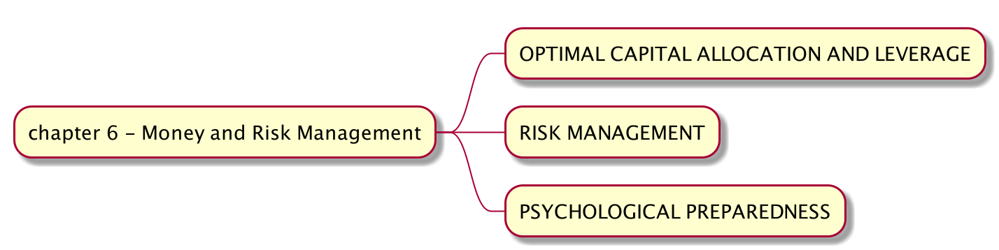

手动拆解《Quantitative Trading - How to Build Your Own Algorithmic Trading Business》（六.1）
来到第六章，照例放上思维导图吧。

这一章的第一部分讲的的是如何对资金进行分配和使用杠杠。我们知道如果对于一个策略我们有 100% 信心盈利，那么我们应该尽可能地提高杠杠来获取最大利益，这当然是在理想状态下的假设，现实中往往在收益越大的情况下，风险也会放大，在加大杠杠的情况下一次回撤就有可能让投资者清仓离场。那么我们如何在同时运行一个或者几个策略的情况下，对资金进行合理的分配和采用杠杠率来使得长远获利最大化呢？这里我们将运用到凯利公式。
我们投资的目的是最大化长期回报，这意味着归零或者更甚的损失是必须避免的, 这里我们简单介绍一下凯利公式的推导。
假设一次投资获利的概率为 P, 每次获利的 b 元（赔率为 1:b）。那么多次重复最优投资比例 f 应该是
那么它的推导过程是什么呢？假设我们有本金 \( A_0 \)，那么在 k 次投资之后取决于赢钱还是输钱，你的本金会变为 \( A_k+1 = A_k \times (1 + bf) \) 或者 \( A_k+1 = A_k \times (1 - f) \)。假设我们总共投资了 N 次，那么这时我们的资金会是
所以
即为一次投资的平均回报率。我们要求这个数为最大。对两边取对数，
对数函数是一个增函数，那么想要让等式的左边最大，那么我们就需要对 f 求导,
这样的话我们会得到上面提到的最优投资比例。
但是聪明的你肯定已经发现一个问题，这里投资的获利概率 P 是固定的，但是股票投资获利的概率不是固定的，同时每次获利的数值也不是固定的，那么在这种情况下怎么计算每次投资的最优比例 f 呢？请听下回分解。